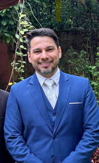
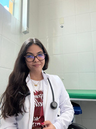

Dra. Camila K. Lacerda
Formação em Medicina · 2024
Revalida 2024.2 · AprovadaMENTORIA VIRTUAL · ESTAÇÃO REVALIDA
Prepare-se para a prova prática do Revalida com mentoria individual, treinos em grupo e feedback de médicos que também passaram por essa jornada.
Um olhar para a preparação. Um passo de cada vez.
Entender onde você está.
Enxergar aonde quer chegar.
01 / A MENTORIA
Você treina. A equipe acompanha de perto.
A Estação Revalida orienta sua preparação para a prova prática com checklists e feedback sobre execução, postura e comunicação.
Conheça quem acompanha vocêQUEM CAMINHA COM VOCÊ
Seis médicos revalidados que conhecem essa jornada pela própria experiência. Equipe apresentada na edição 2026.1.
Formação em Medicina · 2024
Revalida 2024.2 · AprovadaFormação em Medicina · 2024
Revalida 2024.1 · AprovadaFormação em Medicina · 2024
Revalida 2024.2 · AprovadaFormação em Medicina · 2023
Revalida 2024.1 · Aprovada
Formação em Medicina · 2024
Revalida 2025.1 · Aprovado
Formação em Medicina · 2024
Revalida 2024.2 · AprovadaNA PRÁTICA
Conheça os recursos apresentados no programa 2026.1. Para a próxima turma, confirme os detalhes com a equipe.
Um encontro semanal com seu mentor para trabalhar os pontos que precisam de atenção e lapidar seu desempenho.
Checklists com a equipe de mentores e feedback individualizado a cada treinamento.
Drive com materiais exclusivos e direcionados, além de aulas gravadas sobre como pontuar nas grandes áreas.
Acesso aos recursos da plataforma, aulas teóricas e práticas de procedimentos até a data da prova, conforme a edição apresentada.
Um canal para esclarecer dúvidas ao longo da preparação.
Atenção à execução, à postura e à comunicação para aperfeiçoar seu treinamento.
COMO FUNCIONA
O ciclo abaixo resume a dinâmica semanal descrita no programa. A ordem e os horários são combinados com a equipe.
Use os materiais, as aulas e os recursos da plataforma para treinar as estações.
Participe do encontro semanal de checklists e receba feedback sobre sua execução.
Leve suas dificuldades para a mentoria individual e trabalhe os pontos de melhoria.
EDIÇÃO 2026.1 · MATERIAL DE APRESENTAÇÃO
O PDF apresenta a 6ª edição, com treinamento de 6 de julho a 28 de agosto de 2026 e investimento de R$ 2.000,00. Pagamento por Pix ou cartão de crédito, com acréscimo de taxa conforme o parcelamento.
Essas datas já passaram. Consulte a equipe para conhecer as próximas turmas, a disponibilidade e as condições atuais.
Ver apresentação 2026.1 em PDF ↗QUEM JÁ VIVEU ESSA JORNADA
Trechos dos relatos publicados na seção “Feedback dos aprovados” do material da mentoria. Nomes preservados.
As mentorias me fez enxergar o revalida e minha vida de outra forma, você trouxe Deus.
Que a mentoria ESTAÇÃO REVALIDA fique gigante. Você vai abençoar muitas pessoas! Deus te deu o dom de ensinar...
POR DENTRO DA PREPARAÇÃO
Uma prévia da organização do acervo dos cursantes: roteiros por área, aulas e recursos para apoiar os treinos.
Cirurgia, Clínica Médica, Ginecologia e Obstetrícia, Pediatria, Preventiva, Procedimentos e Trauma.
Aulas gravadas e extras da Dra. Giovanna, estações gravadas pelos mentores e vídeos com dicas rápidas.
Blocos de sintomas, cadernos da Atenção Básica, cadernetas de saúde, calendário de vacinas, fluxogramas e PCDT do Ministério da Saúde.
As imagens mostram a organização do acervo. Consulte os conteúdos e as condições de acesso da próxima turma.
Saber mais sobre os materiais ↗DÚVIDAS FREQUENTES
Conheça a proposta antes de dar o próximo passo.
Sim. O programa trabalha os pontos que você precisa melhorar em cada estação, com estratégias para aperfeiçoar execução, postura e comunicação.
Também pode participar. A mentoria oferece orientação sobre por onde começar, organizar os estudos e treinar os diferentes tipos de estação.
Todos os encontros são pelo Google Meet. O programa 2026.1 prevê oito semanas, com uma mentoria em grupo e uma individual por semana. Consulte a equipe sobre a próxima edição e os horários.
A plataforma recomendada é a Pense Revalida, com acesso Premium incluído conforme as condições da turma. Quem utiliza outra plataforma também pode participar, mas os mentores não têm acesso ao histórico de checklists realizados nela.
O material da edição 2026.1 informa R$ 2.000,00, com pagamento por Pix ou cartão, com taxas conforme o parcelamento. Para valores e condições das próximas turmas, fale com a equipe.
Use o formulário de interesse ou o WhatsApp. A equipe confirma disponibilidade, calendário e condições de participação. O envio do formulário não confirma matrícula.
Não. A participação não garante aprovação; os relatos apresentados descrevem experiências individuais.
A Estação Revalida é uma iniciativa independente de mentoria. As informações oficiais do exame devem ser consultadas nos canais do Inep.
UM NOVO PONTO DE PARTIDA
Receba informações sobre a mentoria ou fale diretamente com a equipe. Seu próximo passo pode começar com uma conversa.